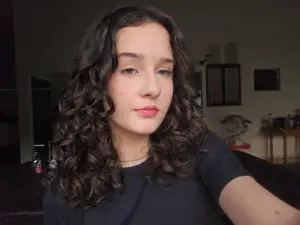

Concluinte do Curso Técnico Integrado em Informática pelo IFSC, com previsão de conclusão em 2026. Voluntária do projeto Elas Digitais, voltado à promoção da participação feminina nas áreas de STEM. Possui interesse em Matemática, programação, tecnologia e projetos de pesquisa e extensão. Participa de olimpíadas científicas, com destaque para a Matemática, e do Programa de Iniciação Científica da OBMEP desde 2022. Busca oportunidades de estágio e desenvolvimento profissional na área de tecnologia, com foco em programação, desenvolvimento de software e inovação tecnológica.
Ensino Fundamental - Escola Municipal Alberto Schmit (2013-2023)
Ensino Médio - Instituto Federal de Santa Catarina (2024 - 2026)
Programa de Iniciação Científica da OBMEP
Participante do projeto Elas Digitais (2024-2026) - Participação em atividades de promoção da participação feminina nas áreas de STEM, com foco em programação e tecnologia, por meio de projetos de ensino, pesquisa e extensão.
Participante de Olimpíadas Científicas (2022-2026) - Destaque em Matemática, com participação ativa em competições e eventos relacionados à área.
Monitora de Matemática (2026) - Auxílio no ensino de Matemática para estudantes do ensino médio.
Participação em eventos científicos (2024-2026) - Participação em conferências, seminários e workshops relacionados à área de STEM.